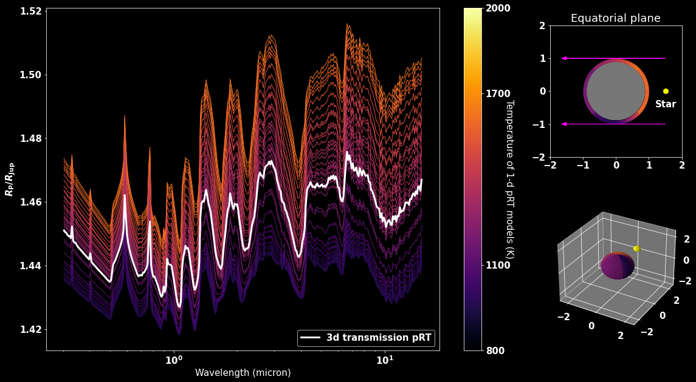

About Me
Research Interests:
I am working on advancing our understanding of the atmospheres of hot Jupiter exoplanets. My research explores what ground- and space-based observations
can reveal about their composition, physical and chemical processes, and atmospheric dynamics. To this end, I analyze observational data from telescopes
and develop forward models for atmospheric retrievals, with a particular emphasis on incorporating 3D effects.
Publications: ADS link
Education:
- Ongoing:
- PhD in Astronomy, Atmospheric Physics of Exoplanets Department, Max Planck Institute for Astronomy, Heidelberg, Germany
- 10/2021 - 11/2024:
- MSc in Physics and Astronomy, Heidelberg University, Germany
- Thesis title: "Reanalysis of the HST/WFC3 transmission spectrum and atmospheric characterisation of HD 209458b“
- 10/2018 - 08/2021:
- BSc in Physics, Heidelberg University, Germany
- Thesis title: “Observation and analysis of exoplanet transits with the 70 cm telescope at the State Observatory Heidelberg”
Conferences, Workshops, Internships:
- 07/2025:
- DPG Summer School, Bad Honnef, Germany
- Topic: A New Era in Exoplanet Atmosphere Observation and Characterisation
- 07/2025:
- Exoclimes VII, Montréal, Canada
- Poster presentation about my work on HD 209458b
- 07/2024:
- ESA Alpbach Summer School, Alpbach, Austria
- Topic: Designing a concept for a space mission to the outer planets of the Solar System and their moons
- 10/2017 - 12/2017:
- Internship, Astronomical Institute of the University of Bern, Switzerland
- Topic: Evaluation of GNSS-satellite orbit data using self-developed Python scripts
Research
Osiris revisited: Confirming a solar metallicity and low C/O in HD 209458b
 Transmission spectrum of HD 209458b with opacity contributions of several absorbing species.
Transmission spectrum of HD 209458b with opacity contributions of several absorbing species.
HD 209458b is the prototypical hot Jupiter exoplanet and one of the best targets available for
precise atmosphere characterisation. Using data from the Hubble Space Telescope and the James Webb Space Telescope, we studied the atmospheric properties in unprecedented detail.
A new data reduction and analysis of the original HST/WFC3 spectrum, accounting for the wavelength dependence of the instrument systematics allowed us to precisely and robustly measure
the much-debated H2O abundance in HD 209458b’s atmosphere. We combined the newly reduced spectrum with archival JWST/NIRCam data and ran free chemistry atmospheric retrievals over the
1.0 − 5.1 μm wavelength range, covering possible features of multiple absorbing species, including CO2, CO, CH4, NH3, HCN, Na, SO2, and H2S. We detected
H2O and CO2 robustly at above 7σ significance, and found a 3.6σ preference for cloudy models compared to a clear atmosphere. We used Bayesian model averaging to account for a
range of different assumptions about the cloud properties, resulting in a H2O volume mixing ratio of
× solar and a CO2 abundance of
× solar. Both results are consistent with solar values and comparable to predictions from the VULCAN
1D photochemistry model. Combining these values with a prior on the CO abundance from ground-based measurements, we derived
an overall atmospheric composition comparable to solar metallicity of
and very low C/O of
with a 3σ upper limit of . This indicates a strong enrichment in oxygen and depletion in carbon during HD 209458b’s formation.
Have a look at the full paper.
A new package for petitRADTRANS
 Comparison of 1D isothermal models at different temperatures of 20 regions around the planet with a 3D calculation of the spectrum.
Currently I am working on a new package for the petitRADTRANS retrieval code (Mollière et al., 2019; Nasedkin et al., 2024) to allow us to model and retrieve planet spectra in 3D. For this, we divide the planet
in longitudinal segments to define regions with potentially different atmospheric properties (p-T profile, chemical abundances etc.). The photon path is traced through the
atmosphere taking the 3D structure into account, and we can also include the rotation of the planet.
Contact
Email: bachmann (at) mpia.de